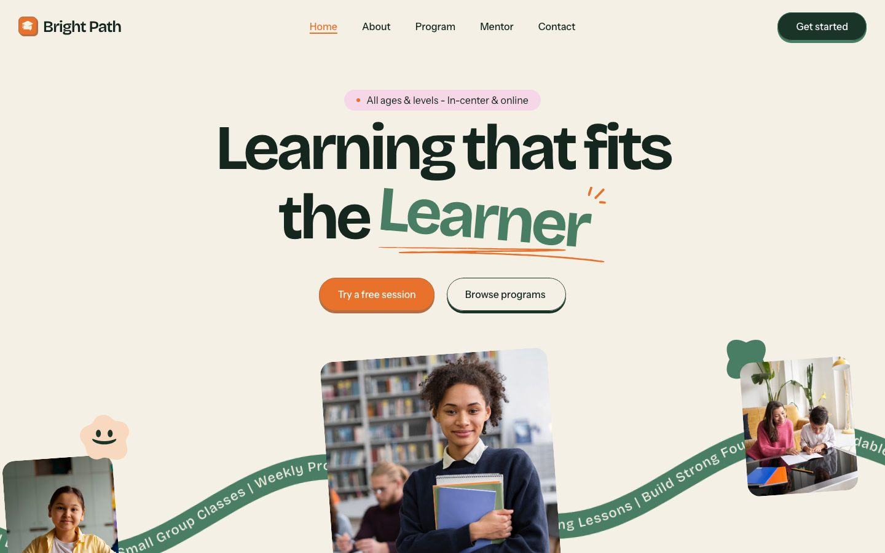
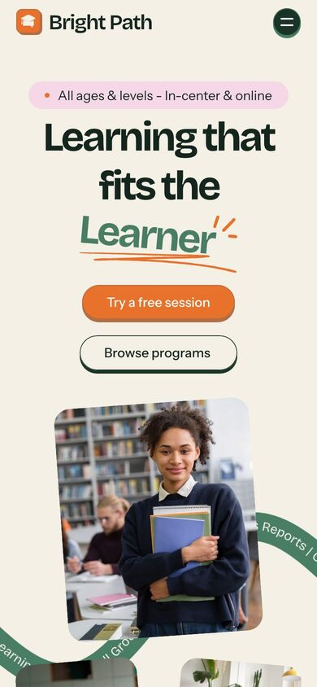

01Empfehlung
Bright Path
Nachhilfe- und Lernzentrum · Framer-Vorlage
Bricolage GrotesqueInstrument SansCreme #f5f1e6WaldgrünOrange4 Pastelle
- Ein ganzes System, kein Baukasten. Creme als Grund, tiefes Waldgrün für Text und Knöpfe, Orange nur für den Hauptknopf, dazu vier Pastelle (Himmelblau, Limette, Rosa, Pfirsich), die immer eine Bedeutung haben: je Angebot eine Farbe, von der Karte bis zur Lehrerkarte.
- Form statt Clipart. Wolkenkanten zwischen den Abschnitten, Hügelwelle über dem Fuß, Knöpfe mit kleinem Druckschatten, Stimmen als leicht schräge Notizzettel. Das ist die Verspieltheit, die wir wollen.
- Alle unsere Abschnitte da: Einstieg mit Pille und zwei Knöpfen, vier Angebote als Farbkarten, Kennzahlen, Ablauf in drei Schritten, Vertrauensleiste, Team, „Wo stehst du?“ (Einstiege nach Situation), Ort und Zeiten als Chips, Stimmen mit Schnitt, Preise, FAQ, Schlussaufruf.
- Handy sauber: Karten stapeln, Schrift bleibt groß, Wellenkanten skalieren mit.
- Einstieg lebt von einer Foto-Collage auf einem Schriftband. Mit einem einzigen Handyfoto fällt das zusammen. Hervorgehobenes Wort mit Kritzel-Unterstrich ist ein Vorlagen-Reflex.
- Lehrer und Angebotskarten brauchen je ein Foto; Fließtext 15 px grau auf Creme ist knapp.
Ganzes9
Abdeckung10
Handy9
Wenig Fotos7
Branchen-Mix9
Abstand9
Summe /6053


Erste 5 SekundenRosa Pille „Alle Altersstufen“, riesiger runder Satz, orangener Knopf mit Druckschatten, darunter Fotos auf einem grünen Band. Freundlich, aber erwachsen. Bei uns: „Musikschule in Findorff. Erste Stunde kostenlos.“
Ansicht gekürzt, ganze Seite in anker/